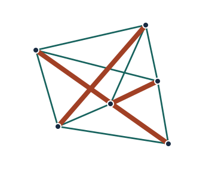

움직임과 구조
Tension & Tensegrity
장력과 압축력의 방향, 텐서그리티가 형태를 유지하는 원리, 수업에서 힘과 움직임을 관찰할 때 쓰는 영어 표현.
알렉산더 테크닉 학습 자료실
알렉산더 테크닉을 배우고 가르치며 다시 찾아볼 수 있는 학습 자료실입니다. 개념은 그림으로 살펴보고, 수업에서 쓸 표현은 한국어와 영어로 함께 읽습니다.
학습 자료 보기
움직임과 구조
장력과 압축력의 방향, 텐서그리티가 형태를 유지하는 원리, 수업에서 힘과 움직임을 관찰할 때 쓰는 영어 표현.